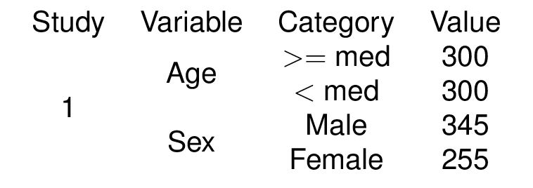
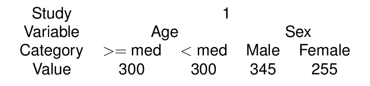

We show in this vignette that texblocks can be transposed while keeping aesthetic attributes.
Multicolumn and multirows are mapped to the transposed positions.
Multiple merges across multiple rows/columns
dat <- dplyr::tibble(
Study = c(1,1,1,1),
Variable = c('Age','Age','Sex','Sex'),
Category = c('$>=$ med','$<$ med','Male','Female'),
Value = c(300,300,345,255)
)
header <- names(dat)%>%t()%>%as.tb()
a1 <- dat$Study%>%tb_reduce(merge = TRUE)
a2 <- dat$Variable%>%tb_reduce(merge = TRUE)
a <- a1 + a2
b <- dat[,-c(1,2)]%>%as.tb()
tab <- header/((a1 + a2) + b)
